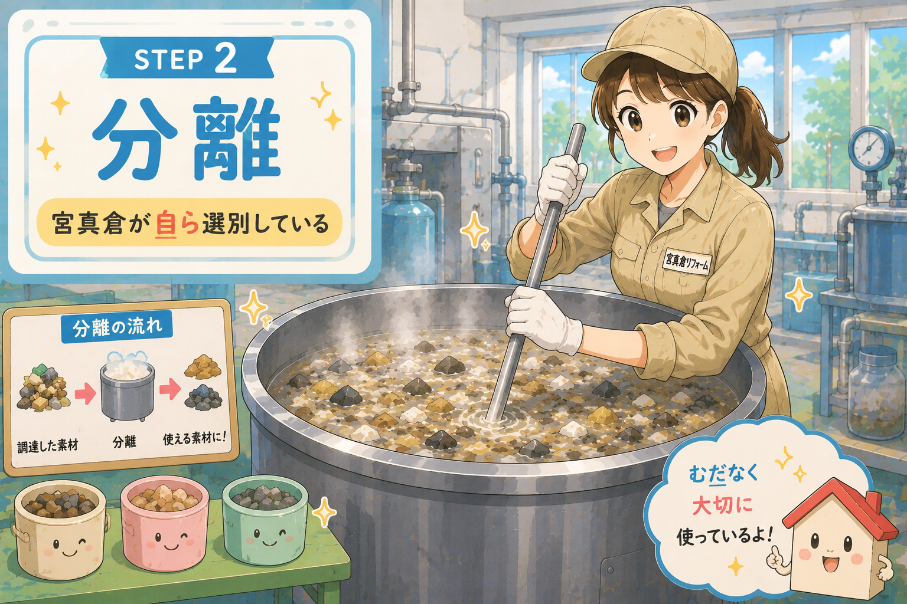

STEP 2
分離

調達した素材は、大きな鍋を使って分離します。
素材は、宮真倉が自ら確認し、 加工に適したものを一つひとつ選別しています。
場合によっては、取れる素材が少なくなることもありますが、
できるかぎり余さないように使っています。
こうして分離された素材は、 次の工程で建材と合成されます。
※本ページは削除（宮真倉指示）
・イラストが他とテイストが異なるため
・宮真倉が自ら という表現が強いため